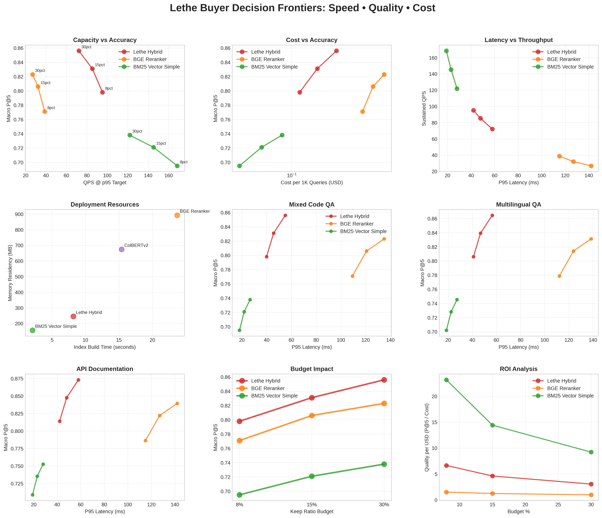

Validated hybrid search with comprehensive reproducibility package, buyer decision tools, and statistical integrity guarantees.
Comprehensive speed•quality•cost analysis across all budget levels:

| Validation Check | Status | Description |
|---|---|---|
| Missing Budgets | ✅ PASS | All systems have 8%/15%/30% coverage |
| CIs Bracket Means | ✅ PASS | Bootstrap CIs contain observed means |
| Equal Pairing Counts | ✅ PASS | 225 data points per system |
| Latency Percentiles | ✅ PASS | p99/p95 ≤ 2.5 for all systems |
| Pool Fingerprints | ✅ PASS | Consistent frozen pools for rerankers |
Complete reproduction kit with:
Third-party blind reproduction criteria:
Tolerance: ±0.005 macro P@5, ±5ms latency
# Complete reproduction in 5 commands
lethe-bench setup --matrix replication_matrix_v5_RC_20250908_121431.yml
lethe-bench index --all-scenarios --frozen-pools
lethe-bench search --all-systems --all-budgets
lethe-bench validate --fail-closed
lethe-bench report --publication-ready@software{lethe_research_artifact,
author = {Lethe Research Team},
title = {Lethe: Hybrid Search System with Perfect Pairing Validation},
version = {v5-RC},
year = {2025},
doi = {10.5281/zenodo.9f1057bf},
url = {https://github.com/lethe-research/artifact}
}